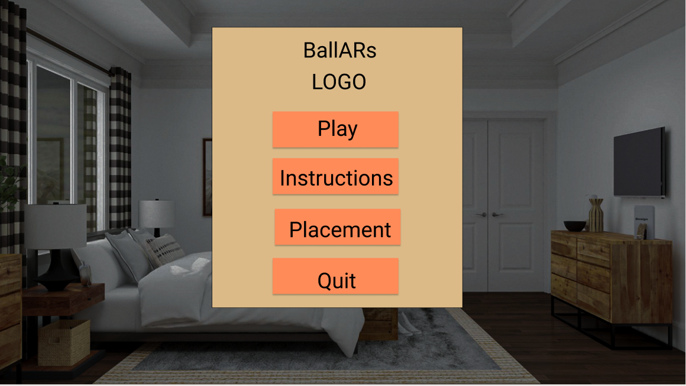

Everyone's Progress
CJ Lin:
- Talked to Peter about how to give feedback to the users with the pose information we have.
- Talked to Yan about what information from the physics engine we can use for feedback.
- Wrote mock functions that take in potential information for feedback, and return text feedback.
Milestone for Week 4: Measure key points and analyze data from the team to develop a feedback algorithm
Peter Michael:
- Connected the webcam to the GPU server (+ web server)
- Got pose estimation working on GPU server
Milestone for Week 4: Do the networking with the AR Headset
Yan Zhe Ong:
- Looked up existing A-frame physics libraries
- Looked at the A-frame physics possibilities as well as code examples
Milestone for Week 4:Understand the chosen physics library
Jasmine Woon:
- Searched for A-Frame examples for menu screens/ pop-up screens and how to make games in AR
- Follow mock up and place elements
- Tried to get the controller to work
Milestone for Week 4: Follow mock up design and place models in an environment
Updates on Code
Currently the GitHub is only has the website code. We have a glitch project that was shared to everyone on the team. Currently the main glitch project has code from our rapid prototype. To simulate branches and testing, everyone has their own glitch project to manipulate before adding on to the main glitch project.
Orginally, we planned on using our laptop's GPU to process the pose estimation. However, Peter found out that our results gave us frames that were 15fps which was not ideal for when we do retargetting in the future. So we decided to a get access to a lab machine to get better results when we run our GPU
Yan has been looking into a few different libraries to help him get the physics components done. Here are a few resources...
-
Link #1
Allows us to set things as static (unaffected by gravity and collisions) and dynamic bodies (affected by gravity and collisions). And also set the physics for the whole environment to stimulate real world gravity. Also allows us to get collision contact points.
-
Link #2
Allows for more collision-specific details like the start and end contact points.
-
Link #3
Allow setting collision forces to false, which is something we can do for the basketball hoop itself to make sure it does not move upon contact with the ball cause ideally it should be stable.
Updates on Ideas
Last week Jasmine finished the Figma design and incorperated feedback from her groupmates earlier this week. Currently she is trying to reproduce all the models and get the magic leap controllers to work on glitch. Checkout a few pictures of the design or click the link to get a full view of Figma design
 The main menu screen
In addition to designing, Jasmine has been trying to get the gameplay mechanics to work. She has googled some WebXR tutorials to gain inspiration and ideas for what she can pull into her team's project. She found this Medium Article by Ada Rose Cannon. She tried integrating what was done in the article with Magic Leap components as a starting point but she is still trying to figure out how to make the controller responsive.
 Gameplay from the Medium article
Gameplay from the Medium article
Plan for Next Week
Here are a couple of milestones that everyone plans on doing
Jasmine: Getting the controller working so that user can shoot basketballs feedback text and if time add audio feedback feature
Peter:
- Pose estimator
- Setup python web server
- Basic feedback working
Yan: Work with Jasmine and CJ to get the controller to work and incorporate the ball trajectory and rebounding function
CJ: Get hoop model imported and get shots in bucket
Blocking Issues
Currently Jasmine is having a hard time getting started and making the gameplay mechanics the lack of resources to help her develop an AR game in WebXR. She has found many resources to build AR games in Unity and AR games that are supported for Andriod applications. Ultimately, she is having trouble ramping up on JavaScript and HTML/CSS skills and getting the Magic Leap Controller to be responsive.
Yan is facing an issue where the physics library is not comprehensive/ lack of documentation. One thing that we wish to do is show the trajectory of the ball but the physics library we intend to use does not support that idea, so we need to find a work around.